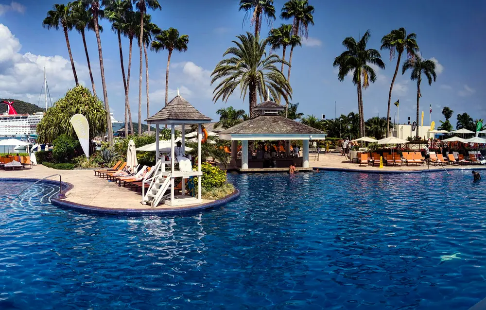

Edinburgh in summer:
long days, big festivals, room to breathe.
A slow guide to summer in Edinburgh: what to see, when it gets busy, and how to enjoy the long daylight without rushing.

Why visit Edinburgh in summer?
Summer brings a different kind of energy to Edinburgh. The days are longer, outdoor spaces feel more inviting, and the historic streets fill with visitors from around the world. June, July and August are the most popular months, and they combine outdoor adventures, cultural events and relaxed places to enjoy the extra daylight. [1]
The atmosphere becomes especially lively in July and August, when festivals and performances bring people into the city. Summer is also a good time to enjoy the green spaces, eat outdoors and take day trips into the surrounding countryside and coast.
Popular attractions and accommodation can be crowded, especially during the August festivals. Booking your main activities and your bed early makes the trip easier.
The Old Town and Edinburgh Castle
The Old Town and the Royal Mile
The Old Town is one of the best places to begin. Its narrow streets, historic buildings, traditional shops and atmospheric closes give you plenty to explore. The Royal Mile connects Edinburgh Castle with the Palace of Holyroodhouse, with small museums and independent shops along the way.
Take your time with the side streets instead of walking straight from one attraction to the next. Some of the most interesting details are found away from the busiest stretch.
Edinburgh Castle
Standing high above the city, Edinburgh Castle is one of Scotland's best-known landmarks. It offers views across Edinburgh and centuries of Scottish history, including the Crown Jewels of Scotland, the Great Hall, the Royal Palace and the Scottish National War Memorial.
The castle's own website says tickets can sell out well in advance, especially over the summer, so book online before you arrive. Allow enough time to explore it properly instead of treating it as a quick photo stop. [2]
Beach, hills and parks
Portobello Beach
Portobello shows a different side of Edinburgh. A short distance from the centre, this seaside area has a sandy beach, a promenade, and cafés where you can stop for refreshments. It suits a relaxed afternoon of walking, watching the waves and eating an ice cream. [1]
Scottish coastal weather can change quickly, and the sea can feel cold even in summer. Check local conditions before you plan a swim.
Arthur's Seat
For walkers, Arthur's Seat is one of Edinburgh's most memorable places. This ancient volcanic hill sits within Holyrood Park and gives panoramic views across the city and the surrounding landscape. [3]
The climb can be steep and uneven in places, so wear comfortable walking shoes. Choose a clear day if you can, carry drinking water and allow time for the return. If you want something easier, other paths around Holyrood Park do not need a climb to the summit.
Parks and gardens
Summer is a good time for Edinburgh's green spaces, which give a break from busy streets and room for walking, reading, photography and picnics.
- Princes Street Gardens. A beautiful central green space beneath the castle, handy for a rest between the main sights.
- The Meadows. Popular with walkers, cyclists, students and families, and a pleasant place for a picnic.
- Royal Botanic Garden Edinburgh. A peaceful visit away from the busiest streets, with collections and seasonal displays. Check visitor information first for ticket requirements and any temporary access limits. [4]
For more places to sit, the city council lists its parks and green spaces. [5]
Summer festivals
Edinburgh is known around the world for its festivals, and summer is when the city's cultural life is at its most exciting. You can find theatre, comedy, music, dance, art, literature and performances from artists across the world.
Edinburgh Jazz & Blues Festival
A chance to hear Scottish and international musicians playing jazz and blues in venues around the city. [6]
Edinburgh Festival Fringe
One of the world's best-known performing arts festivals, bringing together comedy, theatre, dance, circus, music and much more. You can choose established performers, independent productions and unexpected street performances. [7]
Edinburgh International Festival
A celebration of outstanding music, theatre, opera and dance, drawing performers and audiences from across the world. [8]
Royal Edinburgh Military Tattoo
Held in the dramatic setting of Edinburgh Castle, the Tattoo is known for its music, precision performances and spectacular atmosphere. [9]
Choose one performance you really want to see, and leave the rest of the day empty.
Festival dates and programmes change every year. Check each organiser's official website before you make travel plans.
Leith, food and the water
Leith and the Royal Yacht Britannia
Leith has a different atmosphere from the historic centre. This waterfront neighbourhood has a strong local identity, independent businesses and restaurants, and it suits a relaxed afternoon by the water. The Royal Yacht Britannia is moored here, and a visit tells the story of the former royal yacht and its role in royal travel. [10]
Outdoor dining and local food
Summer is a good time for Edinburgh's food scene, with outdoor seating and independent cafés that make it easy to eat while you take in the city. Leith is worth considering for waterfront dining, and the Old Town and New Town offer plenty of choice too. Try the traditional Scottish dishes as well as the international options. For ideas, read our guide to eating slowly in Edinburgh.
A boat trip on the Firth of Forth
If you have extra time, see the coast from the water. Boat trips on the Firth of Forth give a different view of the landscape and the historic bridges, and depending on the tour you may see islands and coastal wildlife. The operator Forth Boat Tours lists its departures from South Queensferry, so check where your cruise leaves from and plan the journey. Schedules and weather can change departures, so check availability before you travel. [11]
Indoor days: museums and galleries
Not every summer day in Edinburgh is sunny. Rain and cooler weather are still possible, so keep some indoor attractions in your plans. The National Museum of Scotland suits visitors interested in history, science, nature, technology and culture, and its collections work for families as well as independent travellers. [12]
You can also look into the city's historic buildings, galleries and cultural attractions. Our culture and history guide is a good place to start.
Summer day trips from Edinburgh
If you are staying several days, a day trip adds beaches, coastal scenery, historic towns and countryside to your holiday. Check transport arrangements and opening times before you set off.
North Berwick
A coastal town known for its seaside atmosphere and views across the Firth of Forth. [13]
South Queensferry
A picturesque waterfront town known for its views of the famous Forth Bridges. [14]
Stirling
A historic Scottish city with an impressive castle and important links to Scotland's past. [15]
Weather and what to pack
Summer in Edinburgh generally brings milder temperatures and longer daylight than winter. June, July and August are usually the warmest months, but the weather can still change: you may get sunshine, cloud, wind and rain in a single day. Prepare for changing conditions instead of expecting consistent heat, and check the latest forecast before you plan outdoor activities.
What to pack
- Comfortable walking shoes for historic streets and outdoor paths.
- A lightweight waterproof jacket.
- Light clothing for warmer afternoons.
- A sweater or extra layer for cooler evenings.
- Sunglasses and sunscreen for sunny days.
- A reusable water bottle.
- A small day bag for daily essentials.
If you plan to climb Arthur's Seat or walk coastal routes, suitable footwear matters most.
Is summer a good time to visit Edinburgh?
Yes, especially if you enjoy outdoor activities, long daylight and cultural events. In one trip you can combine beaches, parks, historic attractions and festivals.
The trade-off is the crowds. Popular dates can be busy, particularly in August. Accommodation and major attractions may need advance booking, and you should allow extra time for getting around during festival periods. For a quieter trip, consider June or early July, depending on what you want from the visit.
A relaxed one-day summer itinerary
Use this as a loose frame. Adjust it for the weather, opening hours and your interests.
Morning — Edinburgh Castle and the Royal Mile
Start with the castle, booked in advance, then walk down the Royal Mile and into a few of the side closes.
Afternoon — Lunch, then gardens or a museum
Have lunch in the city, then spend time in Princes Street Gardens or the National Museum of Scotland, depending on the weather.
Late afternoon — Holyrood Park
If the weather is pleasant, head towards Arthur's Seat or Holyrood Park for outdoor views.
Evening — Dinner in the Old Town or Leith
Finish with dinner in the Old Town or by the water in Leith. During festival season, consider a performance if tickets are available.
Questions about summer in Edinburgh
Which summer month is best?
June, July and August each offer something different. June is a good choice before the busiest festival period, while August suits visitors who want the big cultural events.
Is Portobello Beach worth visiting?
Yes. It gives you a seaside experience close to the city, with a sandy beach, a promenade and cafés nearby.
Can you explore Edinburgh on foot in summer?
Many central attractions are within walking distance of each other. Some routes include steep streets and hills, so wear comfortable shoes.
Does Edinburgh get hot in summer?
The summer climate is generally mild rather than consistently hot. Conditions change, so a light waterproof jacket is a sensible thing to carry.
Is Edinburgh crowded in summer?
Popular attractions can get busy, especially during the August festivals. Book accommodation and major attractions early.
How many days are enough in summer?
Two or three days are a useful start for the main attractions. More time lets you enjoy the beaches, the festivals and nearby day trips.
Final thoughts
Edinburgh in summer combines history, culture, outdoor activity and coastal experiences. You can spend a morning on a medieval street, an afternoon by the sea, and an evening at live music or a performance.
The best way to enjoy the city is to balance the famous attractions with slower moments in parks, neighbourhoods and waterfront areas. Whether you come for the festivals or for a simple Scottish city break, summer gives you plenty of reasons to explore at your own pace.
Visiting in another season? Read our spring guide, or keep planning with our Edinburgh travel guide and the best places in Edinburgh.
Further reading
[1] Edinburgh.org — Summer in Edinburgh
[2] Edinburgh Castle — plan your visit
[3] Historic Environment Scotland — Holyrood Park
[4] Royal Botanic Garden Edinburgh — visitor information
[5] City of Edinburgh Council — parks and green spaces
[6] Edinburgh Jazz & Blues Festival
[8] Edinburgh International Festival
[9] Royal Edinburgh Military Tattoo
[10] The Royal Yacht Britannia
[11] Forth Boat Tours
[12] National Museum of Scotland
[13] Visit East Lothian
[14] VisitScotland — Edinburgh and surroundings
[15] Visit Stirling
This article provides general travel inspiration. Event dates, opening times, ticket rules and access arrangements may change, so check official sources before you travel.